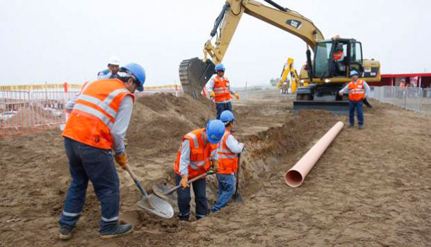
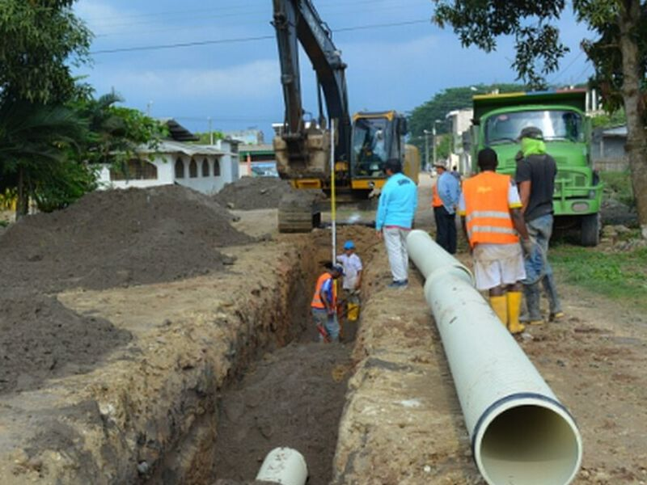
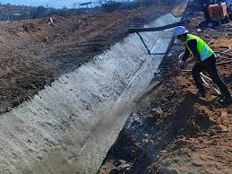

Redes de Agua Potable
Nos especializamos en la instalación y mantenimiento de redes de agua potable, asegurando el suministro continuo y seguro para proyectos residenciales, comerciales e industriales. Nuestro equipo de expertos trabaja con materiales de alta calidad y cumpliendo estrictamente las normativas vigentes para garantizar un servicio eficiente y duradero.

Alcantarillado
Diseñamos, construimos y rehabilitamos sistemas de alcantarillado con tecnología avanzada, optimizando el flujo de aguas servidas y evitando filtraciones o problemas estructurales. Nos aseguramos de cumplir con todas las regulaciones sanitarias, ofreciendo soluciones seguras y sostenibles.

Aguas Lluvias
Implementamos sistemas eficientes de recolección y conducción de aguas lluvias, evitando inundaciones y contribuyendo a la gestión sostenible del recurso hídrico. Nuestro equipo diseña soluciones adaptadas a cada proyecto, garantizando la protección de infraestructuras y espacios urbanos.
